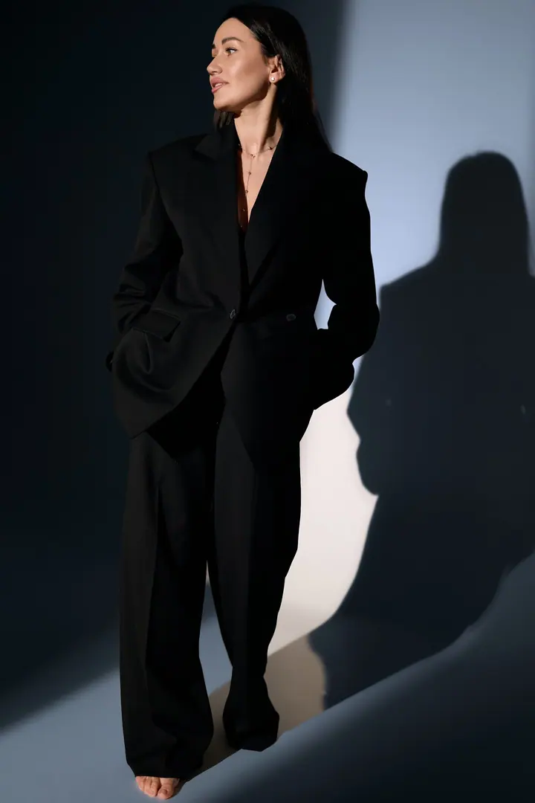
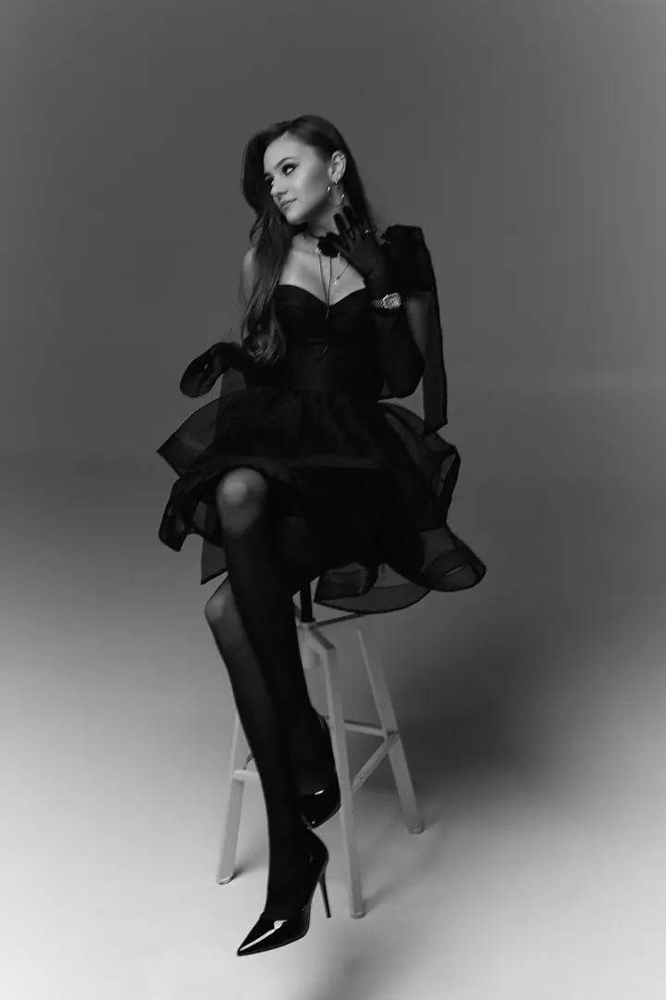

Portrétní focení
Focení pro ty, kdo se chtějí vidět přirození, sebevědomí a krásní. Nemusíte umět pózovat, stačí být sami sebou a o zbytek se postarám já.

Portrétní a svatební fotografka
Jmenuji se Anastasiya Bokotey a fotím portréty a svatby. Na mém focení se nemusíte nutit do póz. Jde mi o emoce, klid a o to, abyste se před objektivem cítili dobře a svobodně.
Zeptat se na termín
Focení pro ty, kdo se chtějí vidět přirození, sebevědomí a krásní. Nemusíte umět pózovat, stačí být sami sebou a o zbytek se postarám já.
Fotografie je moje vášeň. Nejde mi jen o to zachytit okamžik, ale předat atmosféru, emoce a náladu, ke kterým se budete chtít vracet znovu a znovu. Vážím si autenticity, opravdových emocí a nenápadné krásy v detailech.
Pracuji s lidmi, kteří se chtějí vidět přirození, sebevědomí a krásní. Při focení se nemusíte bát dokonalých póz ani vynucených úsměvů. Stačí být sami sebou a já se postarám, aby vše působilo harmonicky a esteticky.
Každé focení je pro mě jedinečné, proto ho s vámi připravuji na míru a záleží mi na tom, aby bylo příjemné a bez stresu. Mám ráda přirozené světlo a vybrané fotky vám můžu připravit i jako tisky nebo album.
Napíšete mi, co si představujete, a společně najdeme termín i podobu focení, která vám bude sedět.
Probereme náladu fotek, oblečení a místo, abyste na focení přišli v klidu a věděli, co čekat.
Žádné nucené pózování. Povedu vás tak, abyste se cítili příjemně a svobodně, a zbytek nechte na mně.
Vybrané snímky pečlivě upravím a předám vám je. Pokud budete chtít, připravím i tisky nebo album.
Vůbec ne. Na focení se nemusíte starat o dokonalé pózy ani vynucené úsměvy. Stačí být sami sebou a já vás jemně povedu.
Ano, kromě portrétů fotím i svatby. Ráda zachytím atmosféru a opravdové emoce vašeho velkého dne.
Ano, kromě fotografií nabízím také tisky a alba. Jsou krásnou památkou i dárkem pro rodinu a přátele.
Termín předání vám řeknu při domluvě podle typu a rozsahu focení.